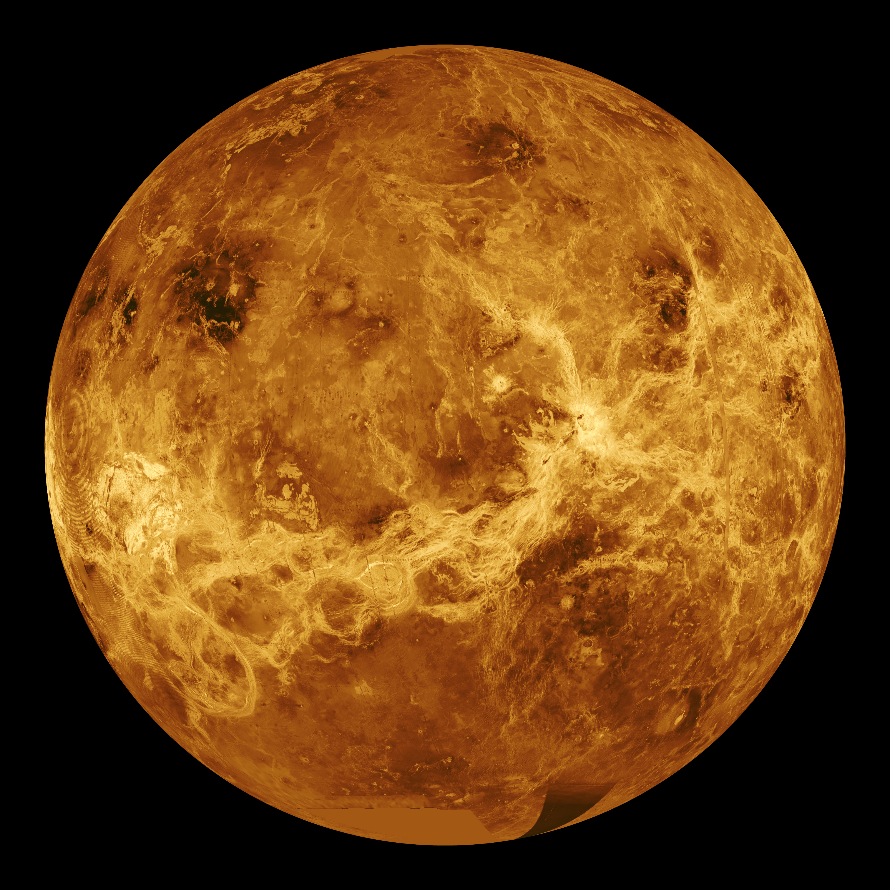

O Universo nasce
O espaço, o tempo e a matéria começam a se expandir a partir do Big Bang.
01 / SISTEMA SOLAR
Explore os oito planetas que orbitam o Sol. Clique em um planeta para descobrir mais.

O planeta mais próximo do Sol.

Um planeta com temperaturas muito altas.

Nosso planeta e lar da vida.

Conhecido como o planeta vermelho.

O maior planeta do Sistema Solar.

Famoso por seus grandes anéis.

Um gigante de gelo azul-esverdeado.

O planeta mais distante do Sol.
02 / LABORATÓRIO COSMOEDU
Compare mundos, acompanhe a história do cosmos, teste seus conhecimentos e navegue pelo Sistema Solar.
MAPA INTERATIVO
COMPARADOR DE PLANETAS
LINHA DO TEMPO
O espaço, o tempo e a matéria começam a se expandir a partir do Big Bang.
Uma nuvem de gás e poeira se transforma no Sol e nos planetas.
Nosso planeta começa a esfriar e ganha sua atmosfera e seus oceanos.
A missão Apollo 11 leva os primeiros seres humanos à superfície lunar.
O telescópio espacial começa a observar as primeiras galáxias do Universo.
UMA VIZINHANÇA EM MOVIMENTO
Planetas, luas e pequenos corpos seguem caminhos diferentes, todos guiados pela gravidade do Sol.